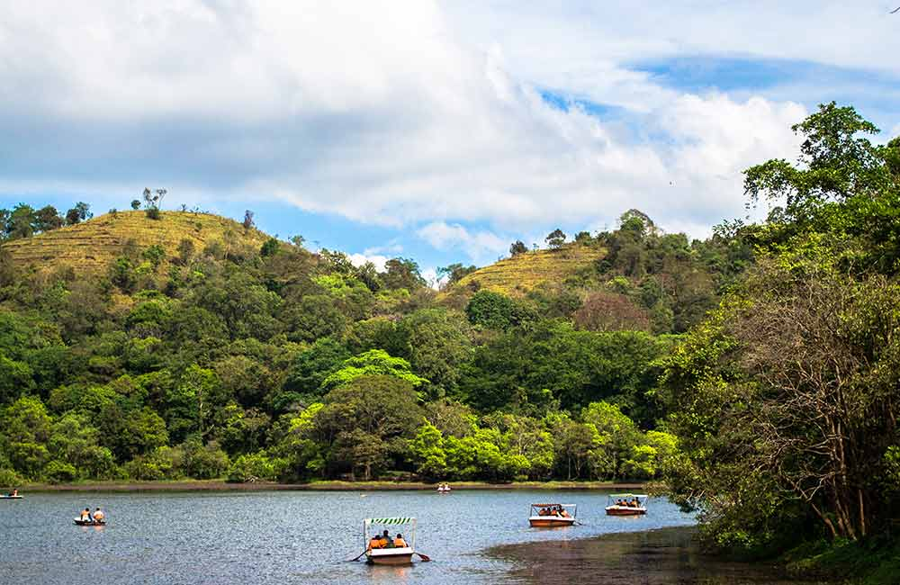
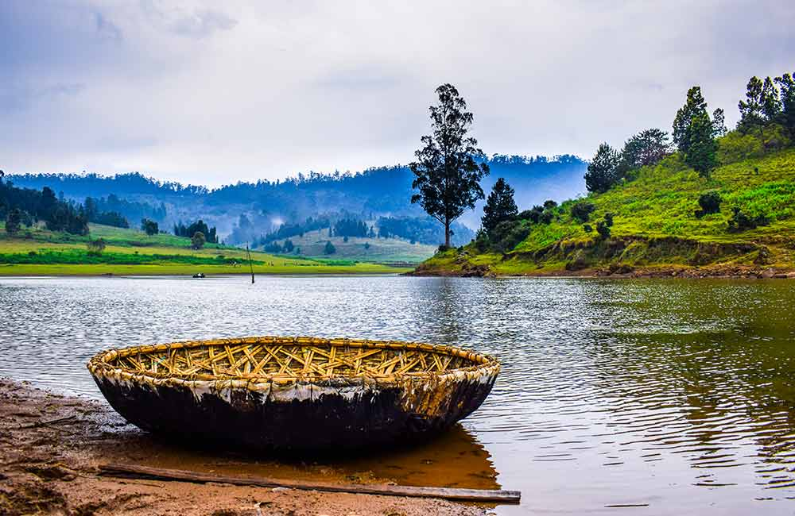
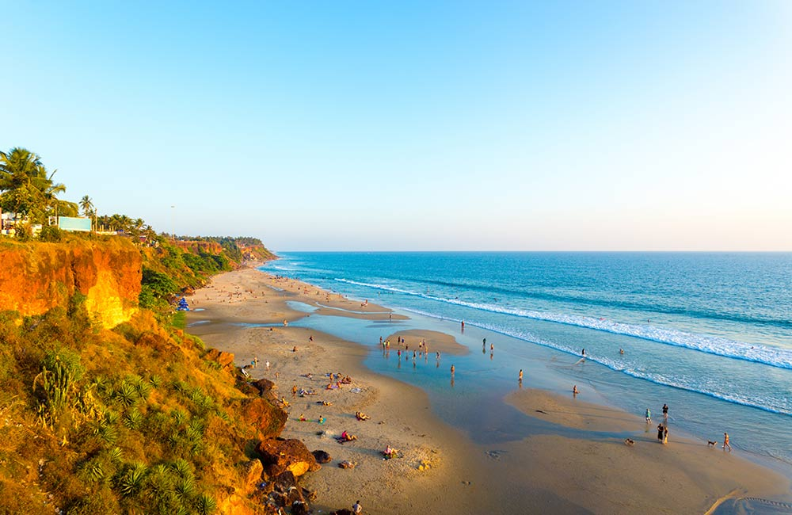

-
1. Coorg, Karnataka

Surrounded by imposing mountains and covered by mist, Coorg is a nature lover’s paradise. This small town in Karnataka is best known for its diverse flora and fauna and aromatic spices and coffee plantations. From waterfalls and trekking routes to forts and temples, there’s plenty to explore in Coorg. It is also home to one of the few Tibetan settlements in Southern India. Apart from sightseeing, there’s plenty of culture, retail therapy, and delicious food to be indulged in.
Best Time To Visit : October to March
nearest airport: Mysore Airport, Mangalore Airport, and Kempegowda International Airport, Bangalore
Nearest Railway Station: Mysore -
2.Wayanad, Kerala
Wayanad, one of the most visited hill stations in Kerala, beckons trekking enthusiasts and nature lovers. Its rolling hills and lush green forests are home to a number of animals and birds. After the monsoons, the waterfalls too come alive with a renewed spirit. The dams and lakes in Wayanad are ideal for an afternoon picnic. And then there are the temples and caves waiting to be explored.
Best Time To Visit : October to May
nearest airport: Calicut International Airport
Nearest Railway Station: Kozhikode -
3.Kodaikanal, Tamil Nadu
The cool breeze of Kodaikanal, a hill town in Tamil Nadu, is a welcome respite from the humidity typically associated with southern India. Nestled amidst the misty clouds, this hill station is rightly called the Princess of Hill Stations. There are rambling paths for trekkers, lakes to spend an afternoon by, waterfalls to bathe in and plenty more. Even the trees and plants here are unique. If you time your visit right, you may be able to see the Kurunji shrubs in bloom. At night, a trip to the observatory takes you to a whole new world.
Best Time To Visit : October to June
nearest airport: Madurai International Airport and Coimbatore International Airport
Nearest Railway Station: Kodai Road -
4.Ooty and Coonoor, Tamil Nadu

Ooty, the Queen of Hill Stations, balances the hustle and bustle of city life with expansive tea gardens. The charming bungalows from the British-Raj era add a romantic flavor to Ooty, making it one of the most popular honeymoon destinations in South India. Its famous miniature toy train is listed as a UNESCO World Heritage Site and is a delight for people of all ages. One can take a toy train ride to Coonoor from Ooty another nearby hill station. Covering a distance of 19 km, the rail route offers a revitalizing travel experience. There are also museums, churches and a tea factory in Ooty that should find a place in your itinerary.
Best Time To Visit : October to June
nearest airport: Coimbatore International Airport
Nearest Railway Station: Coimbatore International Airport -
5.Chennai, Tamil Nadu

Chennai, the capital of Tamil Nadu, is a blend of the old and the new. It is often described as the keeper of South Indian traditions. While on one hand, it flaunts spectacular architecture from the city’s past, on the other, it is known for its cosmopolitan lifestyle, quirky cafes and boutique stores. The city also boasts of the second-longest urban beach in the world. If you’re an adventure enthusiast, there’s plenty to do here. With something to offer to everyone, Chennai is one of the most visited family destinations in South India.
Best Time To Visit :October to February
nearest airport: Chennai International Airport
Nearest Railway Station: Chennai Central -
6.Gokarna, Karnataka

Chennai, the capital of Tamil Nadu, is a blend of the old and the new. It is often described as the keeper of South Indian traditions. While on one hand, it flaunts spectacular architecture from the city’s past, on the other, it is known for its cosmopolitan lifestyle, quirky cafes and boutique stores. The city also boasts of the second-longest urban beach in the world. If you’re an adventure enthusiast, there’s plenty to do here. With something to offer to everyone, Chennai is one of the most visited family destinations in South India.
Best Time To Visit : October to March
nearest airport: Dabolim Airport, Goa
Nearest Railway Station: Ankola and Gokarna Road -
7.Hampi, Karnataka

Hampi is one of the top places to visit in South India. The world heritage site takes visitors back in time to the 15th and 16th century with its magnificent ruins. It makes everyone’s imagination come alive with remnants of temples, monuments, and havelis. Quaint cafes set up on rooftops offer a variety of cuisines and are the ideal places to spend the evening.
Best Time To Visit : October to February
nearest airport: Kempegowda International Airport, Bangalore
Nearest Railway Station: Hospet Junction -
8.Varkala, Kerala
Varkala, a small town in Kerala, also boasts of one of the top beaches in South India. The pristine white sandy Varkala beach is offset by majestic cliffs that make it a popular site with photographers. The town caters to backpackers as well as families. It’s an ideal place to escape city life. Apart from the beach, there are shacks with their fresh catch of the day and flea markets that make this place special. At its essence though, Varkala is a temple town with religious significance for Hindus.
Best Time To Visit : October to March
nearest airport: Trivandrum International Airport
Nearest Railway Station: Varkala Sivagiri -
9. Mahabalipuram, Tamil Nadu

Mahabalipuram, once a major seaport, is now a must-visit World Heritage Site on every history buff’s bucket list. From carved relief work on stone to cave temples, Mahabalipuram overflows with architectural wonders. Sunsets are extra special here as the soft glow of the setting sun adds to the allure of these monuments. And then there’s the mystery of Krishna’s Butterball. The city’s proximity to Chennai makes it one of the popular long weekend destinations in South India.
Best Time To Visit : October to March
nearest airport: Chennai International Airport
Nearest Railway Station: Chennai and Chengalpattu -
10. Madurai, Tamil Nadu
Madurai is often described as the soul of Tamil Nadu. As one of India’s oldest cities, Madurai is a celebration of Tamil culture and heritage. The temples here have religious significance as well as architectural beauty. However, this is not the only reason Madurai is listed amongst the top tourist attractions in South India. It is a vibrant city that offers a variety of South Indian foods as well. From roadside dhabas to fine dining restaurants, there’s a world of food waiting for you here.
Best Time To Visit :October to March
nearest airport: Madurai International Airport
Nearest Railway Station: Madurai Junction